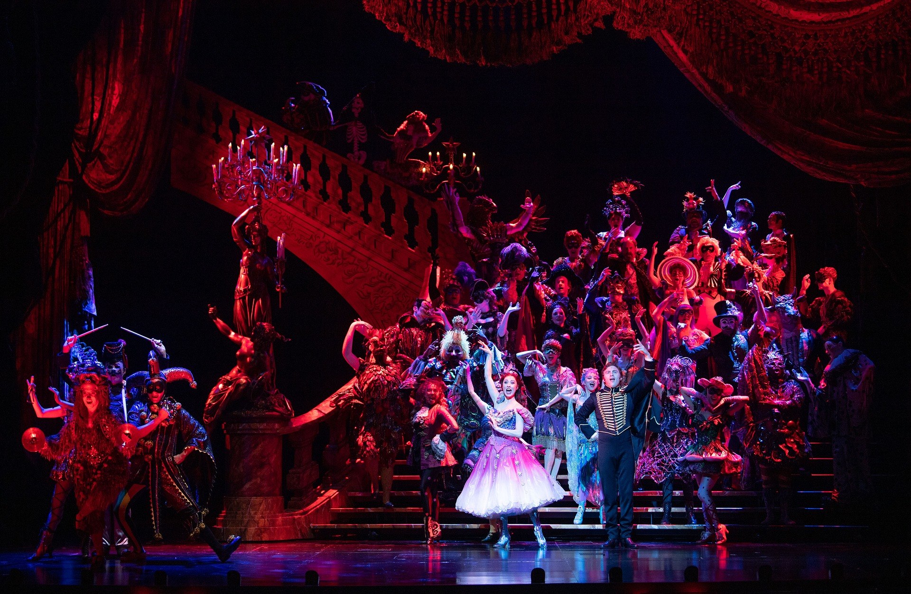

Welcome to my website! I have seen a lot of musicals over my life, starting from when I was a small child being taken to see starlight express at the Royal Albert Hall. Since then I have been a huge fan of musicals and musical theatre continues to be a big passion of mine.

Photo by Ahmad Ardity from Pixabay